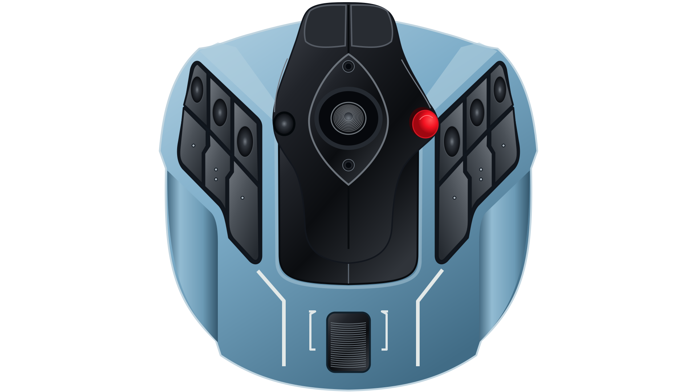
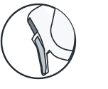
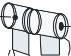
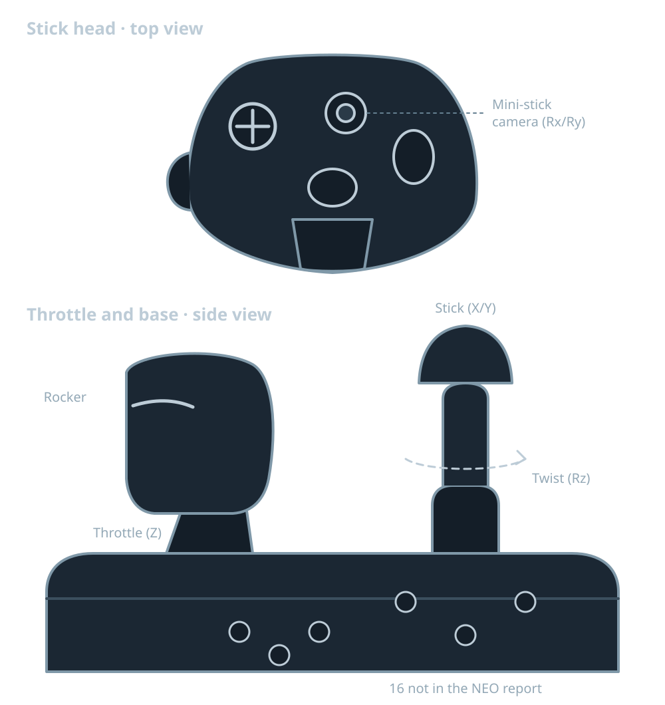

TCA-NEO bridge
Loading…
TCA Sidestick and Quadrant
Click a control, or press it during emulation. Its NEO mapping lights up on the right.




Other inputs
Sidestick hat
Sidestick
Quadrant detent states
Quadrant add-on inputs
T.Flight Hotas NEO
Ringed: mapped now. Filled: new mapping, with a yellow ring when added and a red dashed ring when removed. Names follow the AC8 reference.
